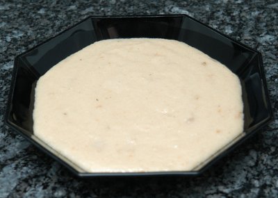

| Zutaten für 4 Personen: | |
| 6 Löffel | Polentamehl |
| 1 Tasse | Milch |
| 2 l | Fleischbouillon |
| 1 Pack | geriebener Käse |
6 Löffel gutes Polentamehl werden mit einer Tasse kalter Milch zart angerührt und während mindestens 30 Minuten auf die Seite gestellt.
Dann bereitet man aus Würfeln, oder noch besser mit Knochen und Fleisch, eine kräftige Fleischbouillon zu und gibt das angerührte Polentamehl unter tüchtigem Schwingen in die kochende Bouillon. Während 30 Minuten auf kleinem Feuer kochen lassen.
Zuletzt geriebenen Käse in die Suppe geben. Vor dem Servieren den Suppentopf noch einige Minuten zugedeckt stehen lassen.
Herbert Eigenmann, Code: PLS
Ergab einen erstaunlich schmackhaften Brei. Habe natürlich nur einen Viertel der Menge gemacht. Die braunen Flocken im Bild sind der leicht angebrannte Teil vom Pfannenboden. Also runter mit der Temperatur und immer ein bisschen Rühren! RE 9.10.2009
@LINKBACK_TAG@ @WAKELOCK@